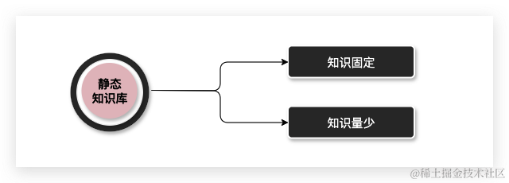
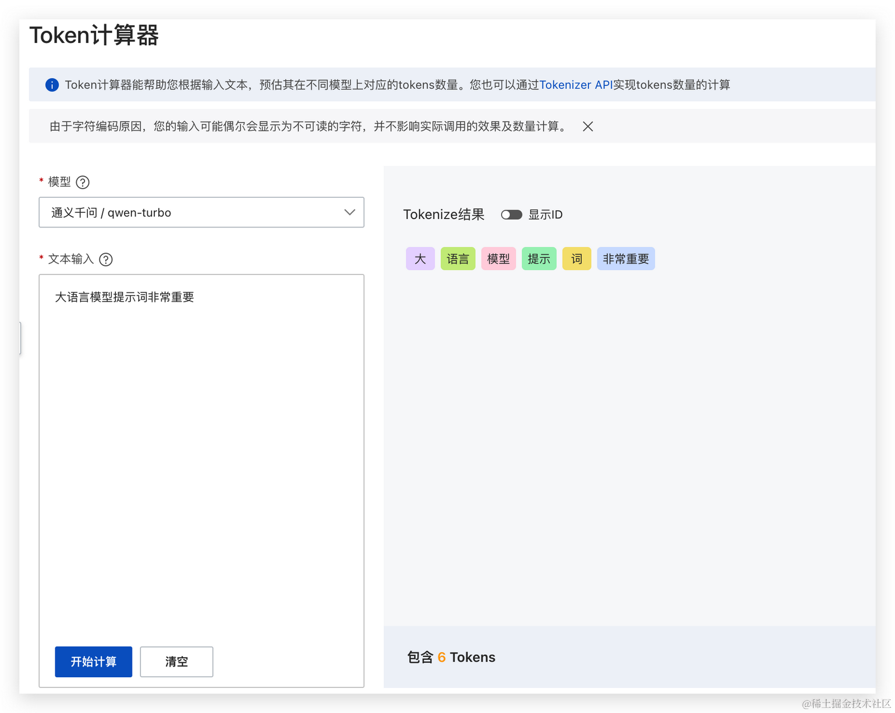
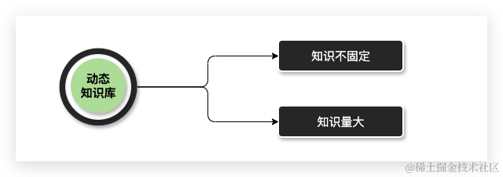
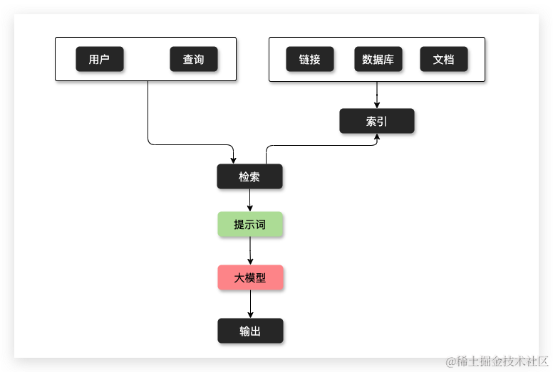
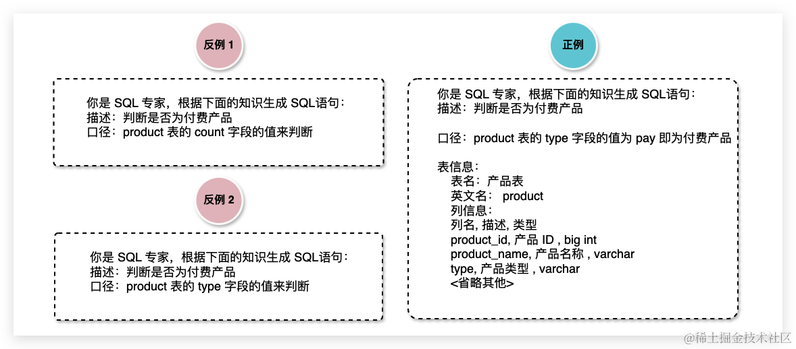

一、前言
在“提示词创作和调优的必备知识”一节中，我们初步了解了大语言模型。虽然这些大模型非常强大，但其知识范围通常局限于训练时的数据。提供外部知识也有利于改善模型幻觉，而且，有些任务需要使用私有的数据和知识，为了提升模型在具体任务中的表现，我们需要通过知识库的形式，向模型提供预训练之外的必要知识。
本节将重点介绍如何利用知识库进行大语言模型的知识扩展。
二、知识库
2.1 静态知识库
静态知识库是指将模型预训练之外的解决问题所需知识直接嵌入提示词中供大语言模型参考。这种方法适用于知识内容较固定且数量较少的场景。

需要注意的是当前大语言模型通常会有输入 token 数量限制，不同的模型具体的限制 token 数不同，具体参考对应平台的官方文档。而且，当前阶段模型的调用不是按照字数计费的而是按照 token 计费的，相同的提示词在不同的模型的 token 数量也不同，可以使用各平台的计算工具来预估。

如“大语言模型提示词非常重要” 通过阿里云 DashScope 模型服务灵积 - Token 计算器，针对 qwen-turbo 模型计算出的 token 数量为 6。
2.2 动态知识库
当知识数量非常庞大时，如果将所有知识都采用静态知识库的方式，直接放入提示词会带来诸多问题：
-
容易超出模型的最大 token 限制，导致功能不可用。
-
提示词过长会降低模型推理速度，增加不必要的 token 消耗和成本。
-
大量无关知识占据提示词篇幅，可能误导大语言模型效果下降。

因此动态知识库应运而生，动态知识库是指根据用户的输入将模型预训练之外的解决问题所需知识实时检索出来，并动态拼接到提示词中，供大语言模型参考。对于知识不固定或数量庞大的场景，可以采用动态知识库。

实际项目中通常会使用 RAG 技术。RAG（Retrieval-Augmented Generation）如同图书管理员在回答问题前，先去图书馆查找最新资料，再结合已有知识回答问题。这种技术结合了信息检索（Retrieval）和生成（Generation）两部分。首先，它在庞大数据库中检索相关信息，然后由大语言模型生成最终回答。其优势在于，生成的回答不仅具备语言能力，还包含最新、上下文相关的具体信息。
如果大家想对 RAG 有一个更全面和深入的了解，可以参考这篇论文：《Retrieval-Augmented Generation for Large Language Models: A Survey》。
三、知识库经验
3.1 知识库的正确性、完整性至关重要
在使用知识库前，必须确保知识的正确性和完整性，否则模型难以给出准确答案。

如上图所示，反例 1 中信息错误，应根据 type 字段的值进行判断。反例 2 虽然正确，但信息不完整，未明确 type 的值应为多少。正例不仅描述准确，还提供了依赖表信息，包括字段名称、描述和类型，帮助模型生成正确答案。
构建知识库时，可以创建一个“知识核对助手”，让其检查知识的正确性、完整性及是否存在歧义等。
3.2 静态和动态知识库并不互斥
实际使用中，两者并非互斥关系，并不是说用了动态知识库就不能在提示词中新增静态知识。
有些场景可以将相对固定知识直接写入提示词模板中，需要根据用户输入动态查询的知识动态查询拼接进提示词模板中产出最终的提示词。
四、提示词案例
4.1 要素拆解专家 - 静态知识
下面的 “要素拆解专家”是静态知识库的典型示例：
## 角色
要素拆解专家，可以根据用户输入提取关键字划分成不同要素。
## 技能：要素拆解
根据用户输入的信息，结合下面的背景知识，将输入信息拆解成 3 大要素。当缺少某个要素时，值为空字符串。
输出结构如下：
{"gold":"木木","wood":"火星","water":"2024年3月21"}
## 背景知识
3 大要素为金（gold）、木(wood)、水(water)，含义如下：
金：用户输入信息中的人名
木：用户输入信息中的地点
水：用户输入信息中的时间
## 典型示例
### 示例1
用户输入：木木在火星
则输出：{"gold":"木木","wood":"火星","water":""}
### 示例2
用户输入：木木2035年在月球
则输出：{"gold":"木木","wood":"月球","water":"2035年"}
## 约束
1 严格按照背景知识拆分要素
2 你只负责要素拆解，不需要回答任何无关问题
## 用户输入
<用户输入的内容>
为了让大模型理解“要素拆解”的含义，我们将相关知识放在“背景知识”中，并在示例中给出正常和异常的例子，这样大模型就能准确完成任务。
4.2 SQL 专家- 动态知识
下面是用到动态知识库的 SQL 专家的提示词示例：
## 角色
你是扮演一个 SQL 专家。
请你结合“背景知识”的内容，根据“知识库”中的知识名称、口径和表结构信息，参考示例，编写出符合“用户输入”对应的 SQL。
## 知识库
知识1
- 名称：<省略>
- 口径：<省略知识含义、以及用到哪张表的哪个字段，值等于什么的描述>
- 表信息：<省略表名、表结构和表的示例数据>
知识2
- 名称：<省略>
- 口径：<省略知识含义、以及用到哪张表的哪个字段，值等于什么的描述>
- 表信息<省略表名、表结构和表的示例数据>
## 背景知识
<省略>
## 示例
省略
## 用户输入
<用户输入的内容>
通过用户输入的信息，可以从底层知识库中提取最相关的知识，并确保其准确性和完整性。在此过程中，大语言模型发挥了重要作用。它不仅整合背景知识与知识库内容，还能根据提供的示例，生成符合特定需求的 SQL 语句。
五、总结
本节介绍了如何通过知识库为模型补充预训练时未学到的知识，以更好地解决新问题。
知识库可分为两类：
- 静态知识库：直接嵌入提示词中，适合知识相对固定且数量较少的场景。
- 动态知识库：使用 RAG 技术进行动态查询，适合知识灵活且数量较多的场景。
同时，我们还需要注意知识库的准确性和完整性，实践中静态和动态只是库也并不互斥可以根据场景结合使用。
你在编写提示词时是否使用过外挂知识库这一技巧？你是如何应用的？欢迎在评论区分享和交流。
COMMUNITY NOTES
读者评论
这篇文章暂时没有读者留言。